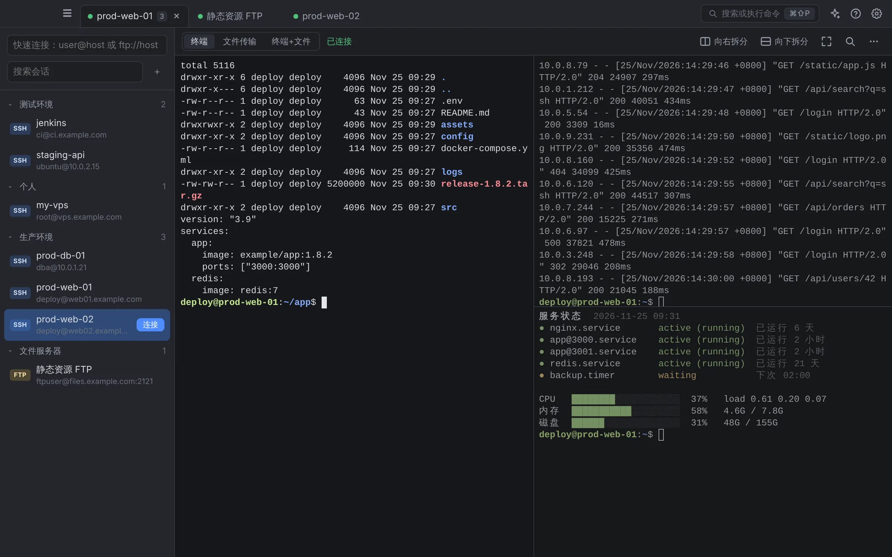
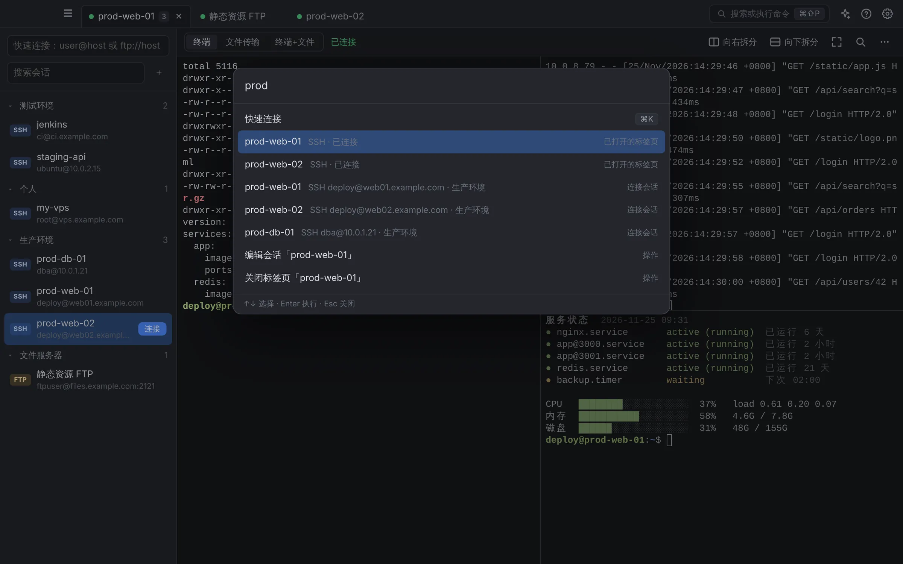
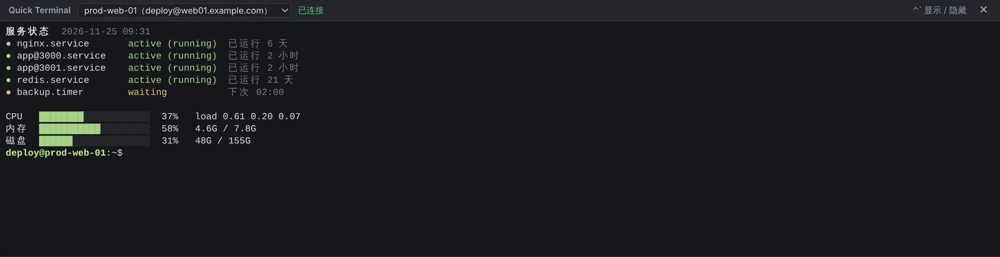
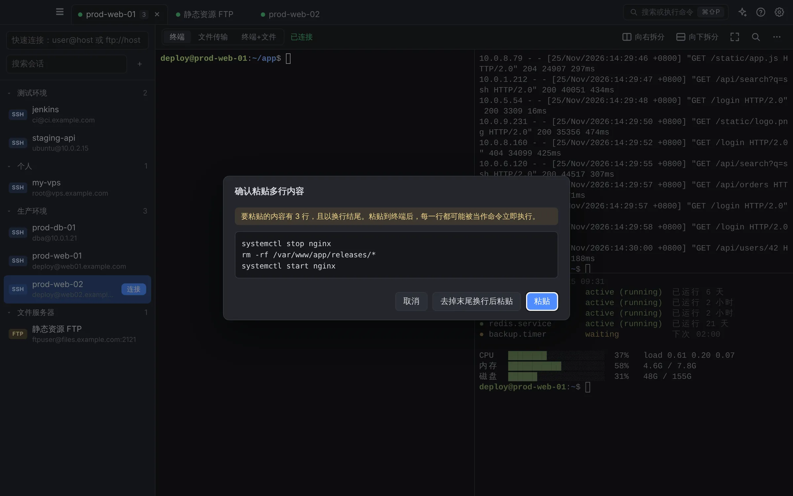

免费 · 开源 · 支持 macOS 和 Windows
一个应用，
管好你的每一台服务器
SSH 终端和 SFTP / FTP 文件传输合在一个应用里。保存服务器、双击连接、分屏同时操作、拖拽传文件、直接在线改配置——日常运维需要的都在这里。

你每天要做的事，都更顺手了
不用在好几个工具之间来回切换，也不用记一堆命令。
多标签 + 终端分屏
一个窗口里开多台服务器，每个标签页还能左右、上下拆分，一边看日志一边操作。
双栏文件传输
左边本地、右边服务器，拖一下就上传下载，整个文件夹也行，进度清清楚楚。
在线编辑服务器文件
双击配置文件直接改，⌘S 保存回服务器。语法高亮、查找替换，GBK 文件也不乱码。
命令面板
⌘P 输入几个字母就连上服务器，⌘⇧P 搜索执行任何操作，不用翻菜单。
Quick Terminal
在任何应用里按一个快捷键，终端从屏幕顶部滑下来；再按一下收起，连接一直在。
为生产环境设计
粘贴多行先确认、首次连接校验服务器指纹、密码加密保存。
一个窗口，盯住所有服务器
- 服务器按分组保存在左侧，双击、点「连接」或按 Enter 就能连上
- ⌘D 向右拆分、⌘⇧D 向下拆分，每个分屏都是独立连接
- 未聚焦的分屏自动变暗；⌘⇧↩ 放大当前分屏，再按一次还原
- 误关了标签页？10 秒内按 ⌘Z 恢复，连接没断
- 后台的长命令跑完了，弹出系统通知提醒你

传文件，像在 Finder 里一样简单
- 本地和服务器左右并排，拖拽、双击或点箭头即可传输，也能直接从 Finder 拖进来
- 整个文件夹一起上传下载，显示进度和速度，随时可以取消
- 服务器上新建、重命名、复制、移动、删除、改权限，右键都有
- 同时支持 SFTP、FTP、显式 / 隐式 FTPS，以及匿名登录
- 老服务器的 GBK 中文文件名，选个编码就能正常显示

改个配置，不用再下载、编辑、上传
- 双击 nginx.conf、.env、脚本、日志等文本文件，直接在内置编辑器打开
- 上百种语言和配置格式的语法高亮，⌘F 查找替换，⌘G 跳转到行
- 自动识别 UTF-8 / GBK / Big5，保存时保持原编码、原换行符
- 想用 VS Code？右键「用本地应用打开」，保存后自动上传回服务器

记不住快捷键？搜一下就行
- ⌘P 输入服务器名称或 IP，回车直接连接，已打开的标签页也能搜到
- ⌘⇧P 搜索并执行任何操作：拆分终端、切换主题、开关设置……
- 模糊匹配：输入
pdb就能找到prod-db

按一下快捷键，终端从天而降
正在写文档、看监控，想上服务器敲两条命令？按全局快捷键（默认 ⌃`，可自定义），终端从屏幕顶部滑出并自动连接常用服务器，用完再按一次收起。

深色、浅色，都好看
- 界面跟随系统自动切换深色 / 浅色
- 内置 14 套终端配色：One Dark、Dracula、Solarized、Gruvbox、Nord、Tokyo Night、Catppuccin……
- 背景透明度和毛玻璃效果可调；支持 Fira Code 等字体的连字
- 终端里还能直接显示图片（Sixel / iTerm2 图片协议）

在生产服务器上，多一分小心
这些保护默认开启，不用额外设置。

粘贴保护
粘贴多行内容前先预览确认，还能「去掉末尾换行后粘贴」，避免一粘贴就执行。
服务器指纹校验
首次连接确认主机指纹；指纹变了会明确警告，防止中间人攻击。
密码加密保存
保存的密码和私钥口令用 macOS 钥匙串或 Windows DPAPI 加密，只留在你的电脑上。
剪贴板只出不进
服务器上 vim / tmux 复制的内容能同步到 Mac；但服务器读取你的剪贴板永远被拒绝。
还有很多细节
user@host 或 ftp://host 回车即连，可顺手保存tail -f、top 大量刷屏也流畅三步装好
macOS
- 1
-
2
拖进「应用程序」
双击下载的 dmg，把 SSHub 拖到「应用程序」文件夹。
-
3
第一次打开时放行
SSHub 还没有经过 Apple 公证，第一次打开会提示「无法验证」。点「完成」后打开系统设置 → 隐私与安全性，在页面下方点「仍要打开」即可，只需要一次。
如果提示「已损坏」，在「终端」里执行下面这条命令后再打开：
xattr -cr /Applications/SSHub.app
Windows 10 / 11
-
1
下载安装程序
大多数电脑选 x64 安装程序；Surface Pro X、Copilot+ PC 等 ARM 设备选 ARM64 安装程序。不想安装？用 免安装版 zip。
-
2
运行安装程序
可以选择安装位置，安装后桌面和开始菜单都会有 SSHub 的快捷方式。
-
3
如果出现 SmartScreen 提示
SSHub 还没有代码签名，Windows 可能提示「Windows 已保护你的电脑」。点 更多信息 → 仍要运行 即可，只需要一次。
常见问题
SSHub 收费吗？
完全免费，源代码在 GitHub 上公开（Apache-2.0 许可证）。
支持 Windows 或 Linux 吗？
支持 Windows 10 和 11（x64 和 ARM64，有安装版和免安装版）。Windows 上应用的快捷键使用 Ctrl+Shift（和 Windows Terminal 一样），这样 Ctrl+C、Ctrl+D、Ctrl+W 在终端里照常可用。Linux 版暂时还没有打包。
我的服务器密码保存在哪里？安全吗？
会话信息保存在 ~/Library/Application Support/SSHub/（Windows 上是 %APPDATA%\SSHub\），其中密码和私钥口令用 macOS 钥匙串或 Windows DPAPI 加密，只存在你自己的电脑上，不会上传到任何地方。
为什么第一次打开提示「无法验证开发者」？
因为应用还没有经过 Apple 公证（需要付费的开发者账号）。按上面「第一次打开时放行」的步骤操作一次即可，之后正常使用。
服务器上的中文文件名 / 终端中文是乱码怎么办？
在会话设置里把「编码」改成服务器使用的编码（老服务器通常是 GBK），终端和 FTP 文件名都会正确显示。
怎么快速了解所有功能？
打开应用后点标题栏右上角的 ✦ 按钮查看「新功能介绍」，按 ⌘/ 查看全部快捷键，或者按 ⌘⇧P 打开命令面板直接搜索想做的事。
遇到问题或者有新功能建议？
欢迎在 GitHub Issues 反馈。